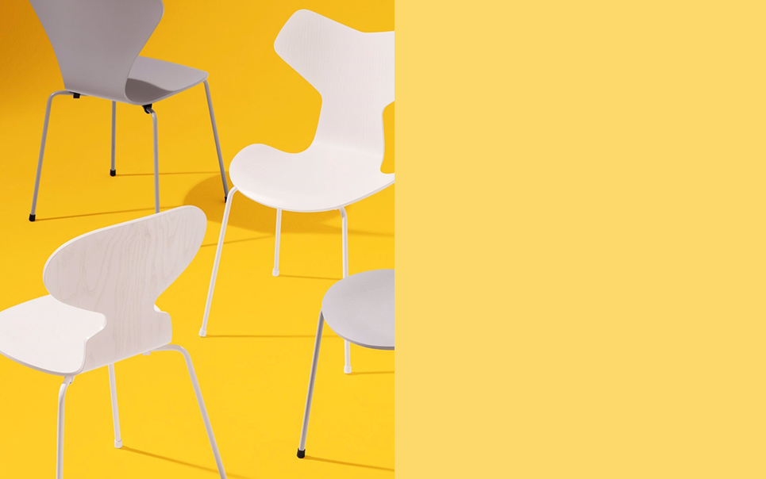
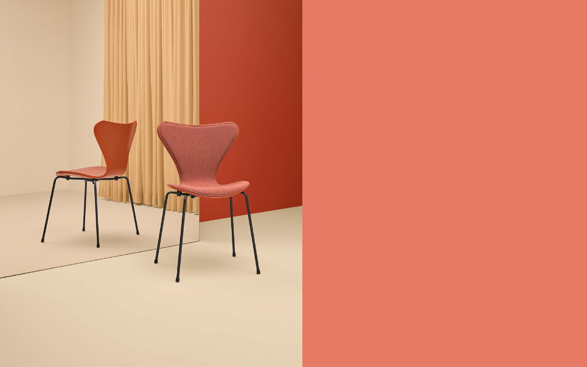

A SENSE OF
COLOR
디자이너 아르네 자쿱센의 가장 사랑받는 의자인 Grand Prix™, Ant™ and Series 7™를 위한 16가지의 세련된 컬러 팔래트를 새롭게 소개합니다. 프리츠 한세의 클래식한 컬러들에 새로운 생명을 불어넣은 새로운 팔레트는 놀랍도록 아름다운 톤의 세계를 선보입니다.
16 NEW COLORS
아르네 자쿱센의 16가지 새로운 색
프리츠 한센은 진정으로 훌륭한 디자인을 능가하는 것은 없다고 믿습니다. 기능과 형태를 넘어 디자인은 우리의 가정과 일상을 바꾸어줍니다.
디자이너 아르네 자쿱센의 가장 사랑받는 의자인 Grand Prix™, Ant™ and Series 7™를 위한 16가지의 세련된 팔레트를 자랑스럽게 소개합니다.
프리츠 한세의 클래식한 컬러들에 새로운 생명을 불어넣은 이 팔레트는 놀랍도록 아름다운 톤의 세계를 선보입니다.
이탈리아 디자이너 Carla Sozzani와의 협업을 통해 신중하게 선별된 각 색상들은 천연 소재를 보완할 뿐만 아니라 서로의 색상들과 어울리도록 개발되었습니다.
팔레트안에 색상들을 선택하고 배치해보면서 당신의 세계를 색칠해보세요.
아르네 자쿱센의 16가지 색상 팔레트
새로운 색상 자세히 보기
-

A GLIMPSE OF YELLOW
두 눈 가득 차오르는 노란색
따뜻한 밝은 노란색 사랑스럽습니다. 기분을 한 층 끌어 올리는 노랑은 활기찬 리듬으로 모든 공간을 밝게 비춥니다. 당신이 가장 좋아하는 색을 Ant™, Series 7™ and Grand Prix™의 기본 컬러들과 함께 조화롭게 배치하여 보세요.
-

A TASTE OF PINK
감각으로 느껴지는 분홍
딸기 젤라또처럼 달콤하고 신선한 장미처럼 사랑스럽습니다. 핑크는 아르네 야콥센의 의자 디자인에 특별한 의미를 부여합니다. 더 달콤하고 부드러운 분위기를 위해 주변에 핑크색을 추가하십시오.
-

A NOTE OF BLUE
파랑의 향취
저녁 하늘처럼 맑거나 한밤중처럼 깊은 새 계열의 차분한 블루스가 분위기를 조성합니다. 블루 노트로 시대를 초월한 디자인을 발견하십시오.